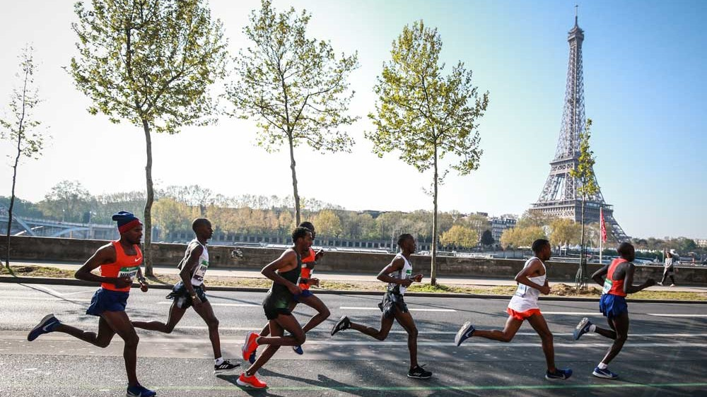
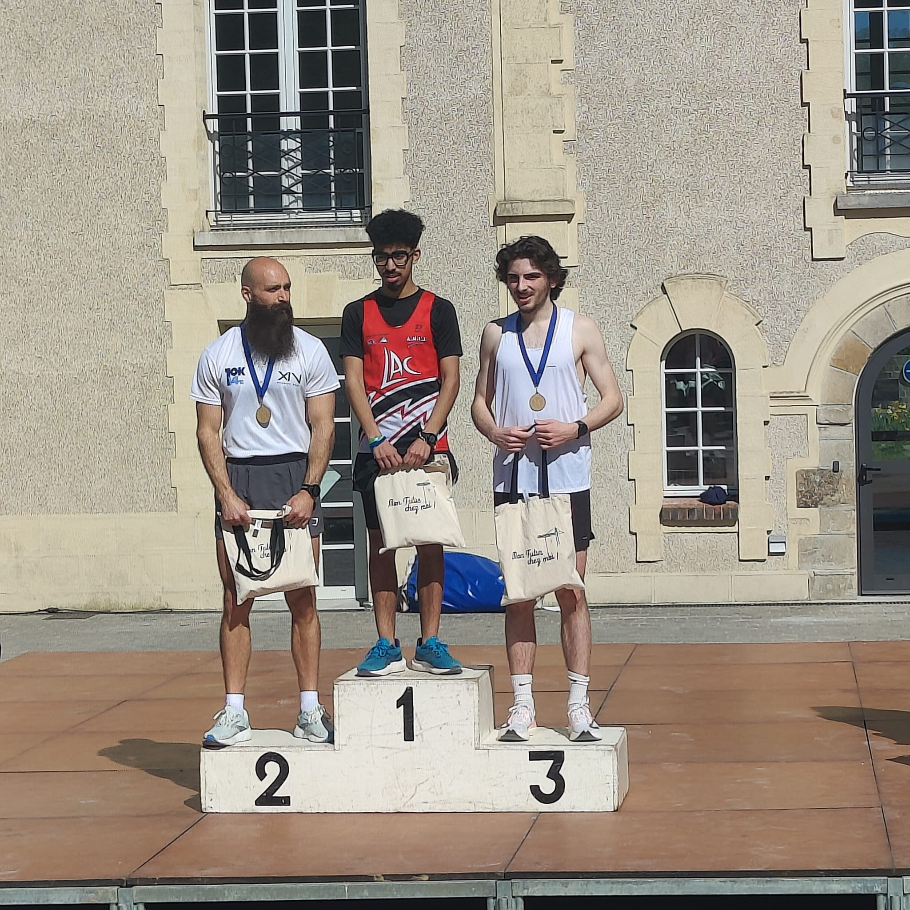
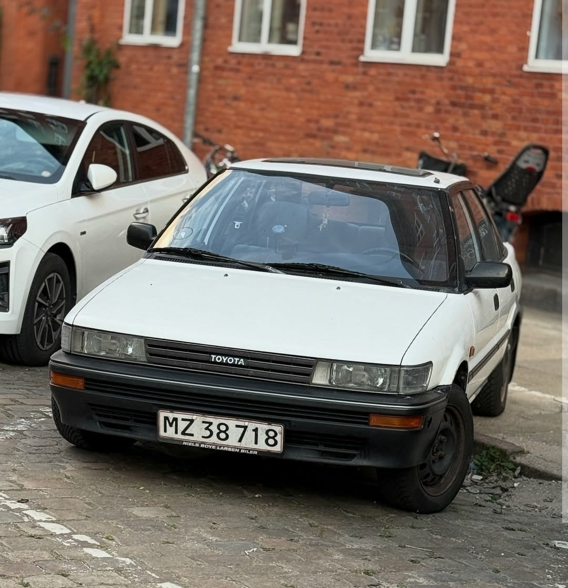
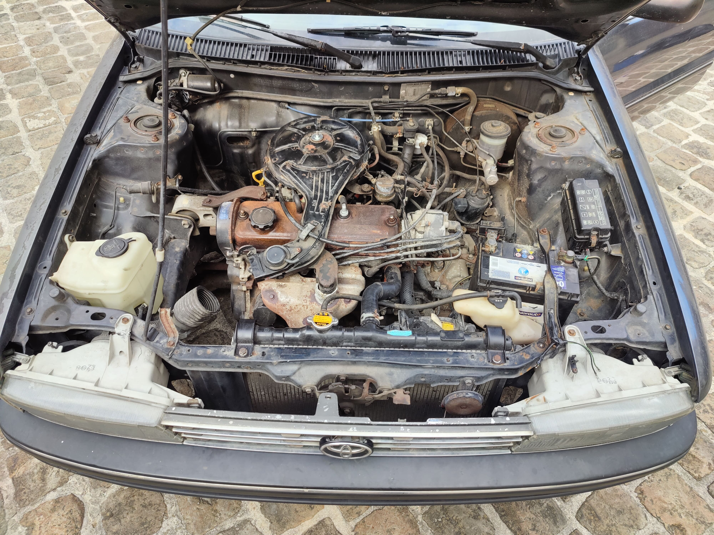

Projets


Le stage exécutant

La Toyota
Centres d'interêts
Le cinéma

La course à pied
Etudes
- L’ENSAM (2024-2027) :
 L’École Nationale Supérieure d’Arts et Métiers (ENSAM) forme des
ingénieurs dans de nombreux domaines techniques et industriels. Elle est
réputée pour son excellence en ingénierie mécanique et en innovation.
L’École Nationale Supérieure d’Arts et Métiers (ENSAM) forme des
ingénieurs dans de nombreux domaines techniques et industriels. Elle est
réputée pour son excellence en ingénierie mécanique et en innovation.
Comme le suggèrent les projets présentés plus hauts, L'ENSAM permet à la fois d'avoir un enseignement de pointe en mécanique des solides et en dynamique des fluides, mais aussi d'être libre à travers la réalisation de projets mêlants travail d'équipe, ingéniosité, CAO et FAO.
La vie associative à l'école est extrêmement riche et permet de lier des
liens très forts au sein de la promotion. Les espaces associatifs et la
volonté des gens permettent de mettre en oeuvre des projets motivants
comme celui de la Toyota Corolla.
C'était l'école que je
souhaitait avoir en sortie de prépa.
- La prépa PTSI/PT* au lycée Raspail (Paris 14, 2022-2024) :

La classe préparatoire est une filière scientifique de haut niveau en deux ans : Une première année en PTSI (Physique, Technologie et Sciences de l'ingénieur), puis une seconde en PT*, renforcant fortement les compétences acquises en première année.
Au Lycée Raspail, l’esprit de la prépa est « fondé sur le respect et la motivation de tous les étudiants, quels que soient leur niveau ». Elle m'a permis, alors que je n'avais pas suivi de cours de mathématiques en terminale, et grâce à des enseignants extrêmement pédagogues et bienveillants, de m'améliorer dans des domaines qui me paraissaient incompréhensibles.
Ces deux ans ont aussi été l'occasion de former des liens tenaces avec des étudiants très intéressants et aux aspirations variées.
Contact
📧 Mail : arthur.himpe@outlook.fr
🔗 LinkedIn : www.linkedin.com/in/himpe-arthur
Projet de Fabrication Mécanique

Contexte et Objectif
L'objectif de ce projet était de définir le processus complet de fabrication d'un Pivot. Ce travail a nécessité l'analyse des spécifications géométriques et dimensionnelles pour garantir la fonctionnalité de la pièce dans son ensemble mécanique.

Analyse de Fabrication
Nous avons réalisé une étude approfondie incluant :
- 📐 Analyse du dessin de définition et des surfaces fonctionnelles.
- 🛠️ Choix du brut (moulage en sable) et calcul des surépaisseurs d'usinage.
- ⚙️ Ordonnancement des phases : Tournage, fraisage et perçage.
Expertise Logicielle & Méthodologie
Ce projet a mobilisé des compétences avancées en ingénierie assistée par ordinateur :
- 💻 CAO (CATIA V5) : Modélisation précise du pivot et conception du montage d'usinage complexe.
- ⚙️ Méthodologie de fabrication : Détermination des antériorités et ordonnancement optimal des opérations pour réduire les temps de cycle.
- 📏 Métrologie : Analyse des tolérances géométriques et dimensionnelles pour assurer l'interchangeabilité des pièces.
Projet Réducteur Industriel
Contexte du Projet
Conception complète d'un réducteur à engrenages pour des applications industrielles, incluant le dimensionnement, les calculs de résistance et l'optimisation des performances.

Spécifications Techniques
- ⚙️ Rapport de réduction : 5
- 🚀 Puissance de sortie : 7.5 kW
- 📈 Rendement minimum : 95%
- ⏳ Durée de vie : 22 000 heures
Conception et Dimensionnement
Utilisation de CATIA V5 pour la modélisation 3D complète, avec calculs de résistance pour les arbres, les roulements et le dimensionnement des engrenages. Validation par simulation par éléments finis (FEA) sous SolidWorks.
Innovations et Matériaux
Optimisation du profil de denture pour réduire le bruit et améliorer l'efficacité. Sélection de matériaux appropriés (acier traité dans la masse 35CrMo4) pour garantir la durée de vie spécifiée.
Projet CAMEX-IA : Serre Automatisée

Contexte et Objectifs
Ce projet s'inscrit dans le cadre du consortium CAMEX-IA. L'objectif consiste à concevoir une serre automatisée pour la culture de pleurotes, qui régulera activement plusieurs paramètres pour optimiser le rendement en fonction des différents stades de pousse du champignon
Ces facteurs sont monitorés en temps réel grace à un système fonctionnant avec Node red sur un Raspberry Pi.

Optimisation des Paramètres de Culture
Le pilotage de la serre repose sur la régulation précise de quatre facteurs environnementaux critiques pour le développement fongique :
- 🌡️ La Température : Maintenue de manière stable pour assurer une fructification optimale.
- 💧 L'Hygrométrie : Contrôlée via un système d'humidification pour maintenir le taux d'humidité.
- 🌬️ Le Taux de CO2 : Régulé par une ventilation afin de garantir le renouvellement de l'air.
- 💡 La Luminosité : Ajustée pour simuler les cycles naturels nécessaires à la croissance des pleurotes.
La course à pied

La course à pied est pour moi une école de la persévérance. Elle m'apprend à gérer l'effort sur la durée et à rester focalisé sur un objectif. La progression s'obtient par une préparation rigoureuse et une analyse constante de ses indicateurs de performance (allure, cardio, récupération).

Après 10 ans de judo en compétition, j'ai trouvé dans la course l'équilibre parfait. C'est un sport qui allie rigueur technique et liberté totale.
Si vous êtes partants pour une course (d'un 5km à un marathon), envoyez-moi un message !
Restauration : Toyota Corolla 1992
L'histoire du véhicule
Cette Toyota Corolla de 1992 a appartenu pendant 33 ans à un propriétaire portugais avant d'être cédée à un ami australien pour un road trip européen. Récupérée à Munich à l'été 2025, elle a été rapatriée à Châlons-en-Champagne pour entamer un cycle complet de restauration.

Objectifs Techniques
Le but est d'acquérir des compétences pratiques en mécanique automobile et en carrosserie. Le projet porte sur la remise en état du moteur 2E (75 ch), le réglage du carburateur et la fiabilisation du démarrage.
Côté esthétique, un travail important de soudure et de traitement anticorrosion est nécessaire pour éliminer la rouille perforante avant une peinture complète en blanc.


Travaux Réalisés
- ✅ Administratif : Quitus fiscal et carte grise française.
- 🔧 Moteur : Test des compressions cylindres, vidange et remplacement du liquide de refroidissement.
- 🧪 Restauration : Dérouillage des supports radiateur par électrolyse.
Défis à venir
Le programme de maintenance reste conséquent : restauration du carburateur, réglage du parallélisme, remplacement du toit ouvrant et réfection complète de l'admission d'air. Un nettoyage méticuleux de la baie moteur et de l'intérieur viendra finaliser le projet.